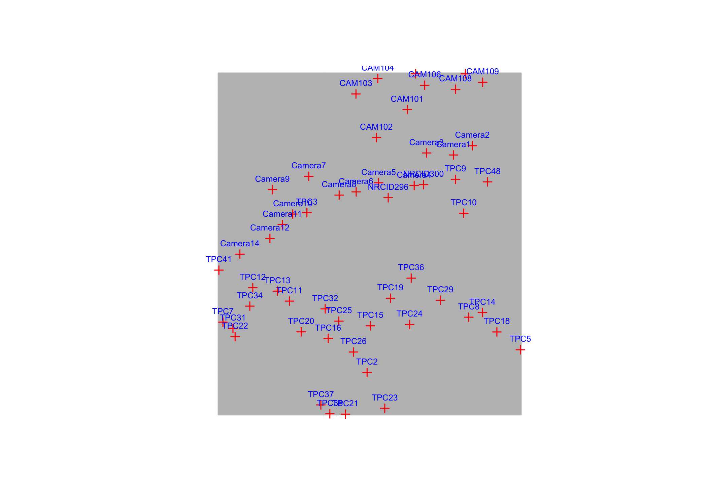
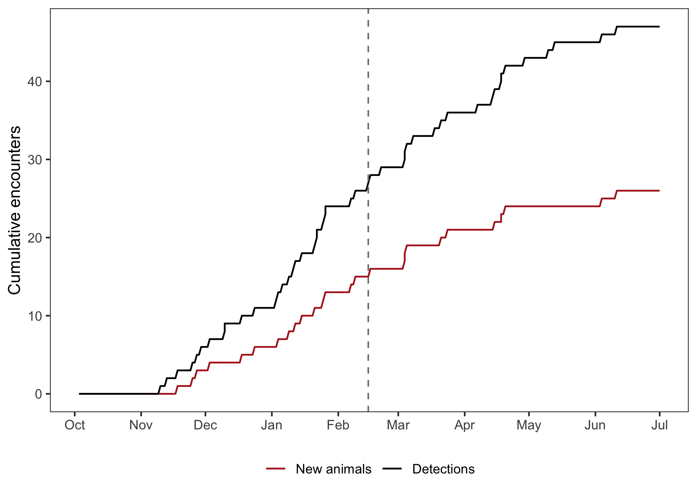
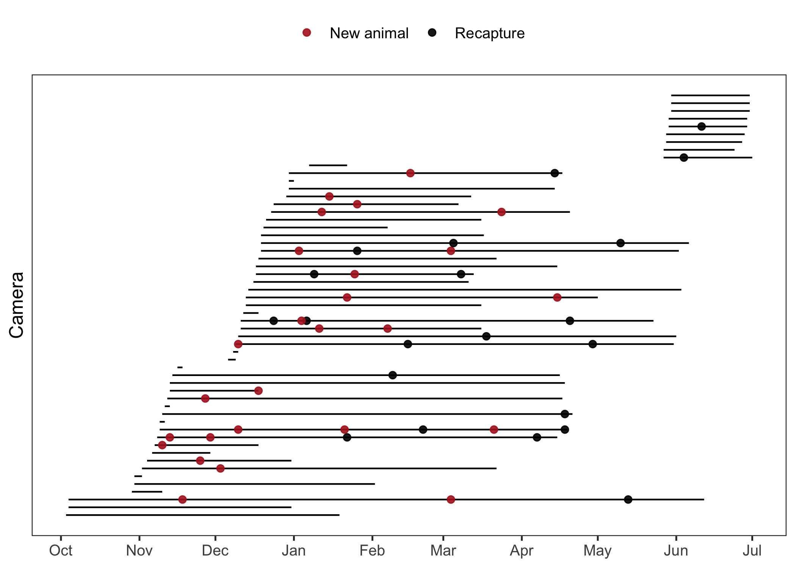
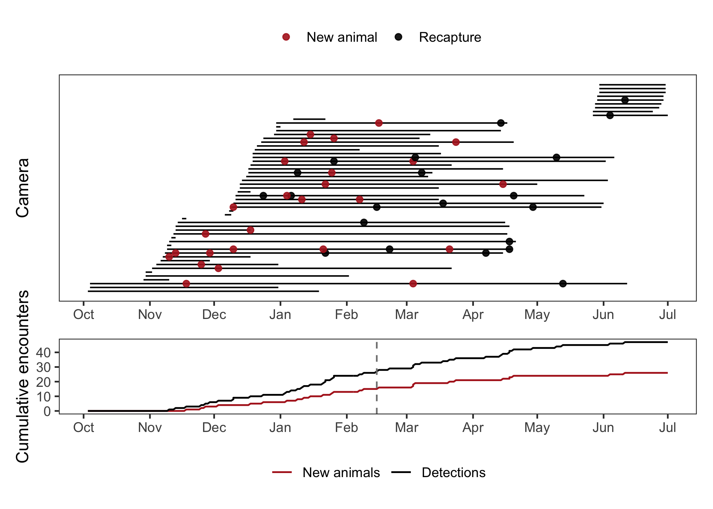

# Packages needed
library(dplyr)
library(secr)
library(tidyr)
library(stringr)
library(ggplot2)
library(patchwork)
# File paths and coordinate reference system used later in the workflow
my_crs <- "+proj=utm +zone=44 +datum=WGS84 +units=m +no_defs"
traps_file <- "namkha_basic/data/traps.csv"
detections_file <- "namkha_basic/data/detections.csv"
output_file <- "namkha_basic/output/namkha_basic_secr_inputs_capthist.RData"
fig_dir <- "namkha_basic/output/fig"
dir.create(fig_dir, recursive = TRUE, showWarnings = FALSE)Create the capture history
1 Covered in this tutorial
- Read and prepare the camera-trap data
- Create an
secrtraps object and add trap covariates - Read and prepare the snow leopard detection data
- Build and check a single-session
capthistobject - Save the capture-history inputs for later scripts
- Make simple diagnostic plots of survey effort and detections
2 Introduction
Spatial capture-recapture models need two closely linked pieces of information: where detectors were placed, and where each identified animal was detected. In secr, these are combined into a capthist object. The object stores the capture histories, the trap layout, detector type, trap usage, and any trap-level covariates that may later be used in detection models.
This tutorial creates the Namkha capture-history input. It covers both trap preparation and detection preparation because the first modelling input file needs both trap information and detections.
Here we treat the Namkha data as a single-session survey. A session is a period over which the population is assumed to be closed to gains and losses, such as births, deaths, immigration, and emigration. In this analysis the survey is represented by one session, one occasion, and total camera effort for each trap.
The output of this tutorial is an R data file containing the objects needed by later scripts. The most important of these are:
traps: the camera locations, detector type, effort, and trap covariatescapts: the detection records in the format expected bysecrch: the single-session capture history used bysecr.fit()
3 Preparations
We begin by loading the packages used in this script and defining the file paths. The coordinate reference system is stored here because later scripts use it when creating masks and plotting spatial objects.
The input data are stored in two CSV files: one file describes the cameras and one file describes the detections. Keeping these as separate tables mirrors the two pieces of information that secr needs: the sampling layout and the animal encounter records.
4 Read and prepare camera-trap data
The camera file contains one row per camera station, including the camera ID, coordinates, operating dates, total effort, and some trap-level covariates. We first read the file, keep only functional cameras, and convert the start and end dates to Date objects.
Removing non-functional cameras matters because a camera that was lost or malfunctioning did not sample animals in the same way as a working camera. In SECR terms, a trap with no valid operating period should not contribute detector effort. Keeping those records would make the trap layout look larger than the actual sampling array and could bias later model fitting.
# Read trap data
cameras <- read.csv(traps_file, stringsAsFactors = FALSE, check.names = FALSE)
# Removing cameras that were lost or malfunctioned
cameras <- cameras %>%
filter(Note == "Functional")
# Convert trap dates to Date format
cameras <- cameras %>%
mutate(
start_date = as.Date(start_date, format = "%d/%m/%Y"),
end_date = as.Date(end_date, format = "%d/%m/%Y")
)
# Define the overall survey period from the active cameras
survey_start <- min(cameras$start_date, na.rm = TRUE)
survey_end <- max(cameras$end_date, na.rm = TRUE)
survey_start[1] "2022-10-03"survey_end[1] "2023-07-01"The survey start and end dates are defined from the cameras that were actually functional. Later, we use these dates to remove any detections that fall outside the survey period and to set the x-axis limits for diagnostic plots.
It is worth keeping both the cameras data frame and the traps object. The traps object is what secr needs for model fitting, but the data frame is often easier to use for checking dates, plotting camera operation periods, and inspecting covariates.
4.1 Create the traps data frame
The next step is to make a simpler data frame containing only the columns needed for the secr traps object, plus any trap covariates we want to keep. The essential columns are:
trapID: unique camera identifierx,y: projected coordinates in metreseffort: total number of days the camera was active
The other columns are covariates that may be useful for detection models. Here we also create simple binary covariates from the Topography text field.
The trap IDs in the camera file and detection file must match exactly. This is one of the first things to check when preparing data because small differences in spaces, capitalisation, or prefixes will prevent detections from being linked to the correct cameras.
The session column is kept in traps_df as part of the SECR data structure, although this analysis has only one session.
# Make a data frame with all the traps information
# This gets used to create the secr traps object
# but is also useful to have outside the secr package environment
## Essential traps columns
traps_df <- cameras %>%
select(
# essential columns
session, trapID, x, y, effort,
# additional covariates
Topography, Water, Altitude
)
# Create covariates based on existing ones if you want
traps_df <- traps_df |>
mutate(
cliff = if_else(str_detect(str_to_lower(Topography), "cliff"), 1, 0),
hill = if_else(str_detect(str_to_lower(Topography), "hill"), 1, 0),
valley_stream = if_else(str_detect(str_to_lower(Topography), "valley|stream"), 1, 0),
) %>%
as.data.frame()
head(traps_df) session trapID x y effort Topography Water Altitude
1 1 Camera8 551291 3345115 86 Cliff 1 3978
2 1 Camera11 543352 3341253 49 Cliff 0 4061
3 1 Camera14 537422 3337389 85 Cliff 0 3959
4 1 Camera12 541617 3339447 93 Cliff 0 4079
5 1 TPC48 572025 3346844 173 Cliff, Valley floor 1 4549
6 1 TPC38 549990 3316508 105 Hill slope 1 4132
cliff hill valley_stream
1 1 0 0
2 1 0 0
3 1 0 0
4 1 0 0
5 1 0 1
6 0 1 0The topographic covariates are coded as 0/1 indicators that can later be used in detection models. These are detector covariates, not density covariates: they describe the camera site and can be used to ask whether snow leopards are more likely to be photographed at some kinds of camera locations than others.
4.2 Create the secr traps object
read.traps() converts the camera locations into an secr traps object. The Namkha cameras are count detectors, meaning that multiple detections of the same animal at the same camera can contribute to the encounter count. Here we give each trap one usage value: its total effort over the survey.
The detector type is important. A count detector is a generalized proximity detector: animals can be recorded at multiple detectors, and can be recorded more than once at the same detector during an occasion. That matches camera-trap surveys where individual animals are identified from photographs and repeated encounters are informative.
Because this analysis has one occasion, the usage for each trap is a single number: the number of days that camera was operating. In a multi-occasion analysis, usage would be a matrix with one row per trap and one column per occasion.
# Create the basic secr traps object using effort as usage
traps <- read.traps(
data = traps_df |> dplyr::select(trapID, x, y, effort),
detector = "count",
trapID = "trapID",
binary.usage = FALSE
)
summary(traps)Object class traps
Detector type count
Detector number 55
Average spacing 2504.368 m
x-range 534489 576620 m
y-range 3316462 3360989 m
Usage range by occasion
1
min 2
max 251The summary is a useful first check that secr has interpreted the detector type and usage correctly. We can also inspect the approximate dimensions of the camera array. This is not used directly in model fitting, but it gives a quick sense of the spatial scale of the survey.
diff(range(traps$x)) / 1000 # x-range in km[1] 42.131diff(range(traps$y)) / 1000 # y-range in km[1] 44.527The following plot is another basic check. Since traps has class secr::traps, calling plot() uses the secr plotting method. The camera labels are added separately so that the locations and IDs can both be inspected.
plot(traps, label = FALSE)
text(traps, labels = rownames(traps), cex = 0.5, pos = 3, col = "blue")
class(traps)[1] "traps" "data.frame"The trap covariates are stored separately from the coordinates and usage matrix. Once added, they remain attached to the traps object and are available when fitting models. For example, later scripts can allow encounter rate to vary with whether a camera was in a valley or stream.
This distinction between coordinates, usage, and covariates is helpful when debugging an analysis:
- Coordinates define where animals could have been detected.
- Usage defines when and for how long each detector was active.
- Covariates describe the detector sites and can explain variation in encounter rate.
The trap covariates must be in the same order as the traps in the traps object. Here that is true because traps is created directly from traps_df before the covariates are added.
# Add trap covariates
covariates(traps)$Topography <- traps_df$Topography
covariates(traps)$cliff <- traps_df$cliff
covariates(traps)$hill <- traps_df$hill
covariates(traps)$valley_stream <- traps_df$valley_stream
covariates(traps)$Water <- traps_df$Water
covariates(traps)$Altitude <- traps_df$Altitude
# Check
names(covariates(traps))[1] "Topography" "cliff" "hill" "valley_stream"
[5] "Water" "Altitude" 5 Read and prepare detection data
The detection file contains the records of identified snow leopards at camera traps. For make.capthist(), the capture data need standard secr columns: session, animal ID, occasion, trap ID, and optionally individual covariates such as sex.
First we read the detections, convert dates, and drop detections outside the survey period defined from the camera data.
The detection records need individual IDs, trap IDs, dates, sessions, and occasions in a consistent form. Here we make sure the dates are genuine Date objects and that the detection records belong to the period sampled by the functional cameras.
Filtering detections to the survey period is a simple but important consistency check. A detection outside the camera operating period may reflect a date-format problem, a camera that was not included in the trap file, or a mismatch between the intended survey period and the data file. The script prints a message so that this does not happen silently.
# Read detections, standardise IDs, and keep only detections within the survey period
capts_raw <- read.csv(detections_file, stringsAsFactors = FALSE, check.names = FALSE)
# Convert detection dates to Date format
capts_raw <- capts_raw |>
mutate(
date = as.Date(date, format = "%m/%d/%Y"),
)
# Drop any detections falling outside the survey period defined above
if(nrow(capts_raw |> filter((date < survey_start) | (date > survey_end)))){
print("Dropping detections outside survey period!")
} else { print("All detections within survey period")}[1] "All detections within survey period"capts_raw <- capts_raw |>
filter(date >= survey_start, date <= survey_end)
head(capts_raw) session animalID occasion date trapID sex
1 1 SL1 1 2023-02-16 TPC37 Female
2 1 SL10 1 2023-03-04 TPC14 Female
3 1 SL10 1 2023-05-13 TPC14 Female
4 1 SL11 1 2022-12-18 TPC31 Female
5 1 SL12 1 2023-02-09 TPC25 Male
6 1 SL12 1 2022-11-13 TPC32 MaleThe raw detection table still contains fields that are useful for checking and plotting. The object passed to make.capthist() should be simpler, containing only the columns that secr expects.
The column names used here are the standard secr names:
session: the sampling session; always 1 in this tutorialanimalID: the individual animal identityoccasion: the sampling occasion; always 1 in this tutorialtrapID: the camera where the animal was detectedsex: an individual covariate, included here because it is available
If sex or another individual covariate is not available in a different data set, that column can be omitted. The essential fields are the session, animal ID, occasion, and trap ID.
# make.capthist needs the standard secr columns only
# remove sex below if unavailable
capts <- capts_raw %>%
dplyr::select(session, animalID, occasion, trapID, sex) %>%
as.data.frame()
head(capts) session animalID occasion trapID sex
1 1 SL1 1 TPC37 Female
2 1 SL10 1 TPC14 Female
3 1 SL10 1 TPC14 Female
4 1 SL11 1 TPC31 Female
5 1 SL12 1 TPC25 Male
6 1 SL12 1 TPC32 MaleAt this point every trapID in capts should appear in traps. This is one of the most common places for small data errors to appear, especially when camera IDs have spaces, different capitalisation, or inconsistent prefixes.
setdiff(unique(capts$trapID), rownames(traps))character(0)An empty result means that all detection trap IDs are represented in the traps object.
6 Create the capthist object
make.capthist() combines the capture table and traps object. The result is a capture-history object with animal detections, trap locations, trap usage, detector type, and covariates in the format expected by secr.fit().
Conceptually, the capture history is a three-dimensional structure: individuals by occasions by traps. The capture table is easier for humans to read because each row is one detection, but the array form is what secr needs for likelihood calculations. The traps object is attached to the capture history, so the final object carries both the encounter records and the sampling design.
In this tutorial there is only one session and one occasion, so the object is simpler than a full multi-occasion or multisession capture history. The same make.capthist() function is used when the survey is split into multiple occasions and sessions.
ch <- make.capthist(captures = capts, traps = traps)
verify(ch)
summary(ch)Object class capthist
Detector type count
Detector number 55
Average spacing 2504.368 m
x-range 534489 576620 m
y-range 3316462 3360989 m
Usage range by occasion
1
min 2
max 251
Counts by occasion
1 Total
n 26 26
u 26 26
f 26 26
M(t+1) 26 26
losses 0 0
detections 47 47
detectors visited 24 24
detectors used 55 55
Individual covariates
sex
Female : 8
Male :15
Unknown: 3 summary(ch, terse = TRUE) Occasions Detections Animals Detectors
1 47 26 55 verify() checks that the object is internally consistent. The summaries are worth reading whenever a data set is prepared because they show, among other things, the number of detected animals, number of detections, detector type, and the trap layout.
summary(ch, terse = TRUE) gives a compact version of the same information and is useful when checking several capture histories. Other secr helper functions, such as trapsPerAnimal() and moves(), are useful diagnostics when there are repeated detections of individuals at multiple cameras.
7 Save the inputs
The later scripts start from the objects created here, so we save the camera data, processed trap and capture data, the traps object, the capthist object, survey dates, and CRS.
The saved file is not just the final ch object. Keeping the intermediate data frames makes checking easier. For example, traps_df is useful when plotting camera operation dates, while capts_raw keeps the detection dates that are not needed inside the final capthist.
# Save key inputs for later scripts
save(
cameras, traps_df, traps, capts_raw, capts, ch,
survey_start, survey_end, my_crs,
file = output_file
)8 Plot capture histories
Before fitting models, it is useful to inspect when cameras were active and when detections occurred. These plots do not change the capthist object, but they help identify obvious data problems such as detections outside camera operating periods, long gaps in sampling, or a small number of individuals appearing late in the survey.
These plots show whether sampling effort was concentrated in a particular part of the year and whether new animals continued to appear throughout the survey.
8.1 Detections over time
The first plot shows the cumulative number of detections and the cumulative number of newly detected animals through the survey. A vertical line marks the midpoint of the survey.
first_appearance is calculated with duplicated(animalID), so it depends on the records being in chronological order. The raw detections are already ordered well enough for the current data, but in other data sets it is safest to arrange by date before using this logic.
# Midpoint of the survey, shown as a visual reference on plots
mid_survey <- survey_start + floor(as.numeric(survey_end - survey_start) / 2)
# Summarise detections by day for a simple capture-history diagnostic plot
daily_detections <- capts_raw %>%
mutate(
ndets = 1,
first_appearance = !duplicated(animalID)
) %>%
complete(date = seq.Date(survey_start, survey_end, by = "day")) %>%
mutate(
ndets = replace_na(ndets, 0),
first_appearance = replace_na(first_appearance, FALSE)
) %>%
arrange(date) %>%
mutate(
cumdets = cumsum(ndets),
cumn = cumsum(first_appearance)
) %>%
dplyr::select(date, ndets, cumdets, cumn) %>%
pivot_longer(cols = c(cumn, cumdets), names_to = "measure", values_to = "value") %>%
mutate(
measure = recode(measure, cumn = "New animals", cumdets = "Detections"),
measure = factor(measure, levels = c("New animals", "Detections"))
)
# Plot cumulative detections and cumulative number of animals over time
capture_history_plot <- ggplot(daily_detections, aes(x = date, y = value, colour = measure)) +
geom_line(linewidth = 0.6) +
geom_vline(xintercept = mid_survey, colour = "grey50", linetype = 2) +
scale_x_date(date_breaks = "1 month", date_labels = "%b") +
scale_colour_manual(values = c("New animals" = "firebrick", "Detections" = "black")) +
labs(x = NULL, y = "Cumulative encounters", colour = NULL) +
theme_bw(base_size = 12) +
theme(panel.grid = element_blank(), legend.position = "bottom")
capture_history_plot
The black line counts all detections, including repeated detections of the same animal. The red line counts newly detected individuals. A long flat section in the red line indicates a period when no new individuals were added, even if known individuals continued to be detected.
8.2 Camera operation and detections
The second plot shows when each camera was operating. Detections are overlaid on the corresponding camera line, with first detections of an individual distinguished from recaptures. This is a compact way to check the temporal structure of the survey.
The cameras are ordered by installation date rather than by camera ID. This makes the pattern of deployment easier to see, especially when cameras were not all installed on the same day. The plot also checks that detections are aligned with operating cameras: a point far outside a camera’s operating line would be a warning sign.
# Order cameras by installation date for the trap operation plot
cameras_for_plot <- cameras %>%
mutate(plot_order = rank(start_date, ties.method = "first")) %>%
arrange(plot_order)
# Mark the first detection of each animal differently from later recaptures
detections_for_plot <- capts_raw %>%
arrange(animalID, date) |>
mutate(
detection_type = if_else(!duplicated(animalID), "New animal", "Recapture")
) %>%
left_join(
cameras_for_plot %>% dplyr::select(trapID = trapID, plot_order),
by = "trapID"
)
# Plot when each camera was operating and when detections occurred at that camera
camera_operation_plot <- ggplot(
cameras_for_plot,
aes(
xmin = pmax(start_date, survey_start),
xmax = pmin(end_date, survey_end),
y = plot_order
)
) +
geom_linerange(linewidth = 0.5) +
geom_point(
data = detections_for_plot,
aes(x = date, y = plot_order, colour = detection_type),
inherit.aes = FALSE,
size = 1.8,
alpha = 0.9
) +
scale_x_date(date_breaks = "1 month", date_labels = "%b") +
scale_colour_manual(values = c("New animal" = "firebrick", "Recapture" = "black")) +
labs(x = NULL, y = "Camera", colour = NULL) +
theme_bw(base_size = 12) +
theme(
panel.grid = element_blank(),
axis.text.y = element_blank(),
axis.ticks.y = element_blank(),
legend.position = "top"
)
camera_operation_plot
Finally, we combine the two plots and save all three figures for checking and later tutorial use.
The combined plot is useful as a quick summary of the capture history: the top panel shows sampling effort and detections by camera, and the bottom panel shows the cumulative capture history through time.
# Combine the two diagnostic plots into one summary figure
combined_plot <- camera_operation_plot / capture_history_plot + plot_layout(heights = c(3, 1))
combined_plot
# Save the plots for checking and later tutorial use
ggsave(
filename = file.path(fig_dir, "namkha_capture_history_over_time.png"),
plot = capture_history_plot,
width = 8,
height = 3.5,
dpi = 200
)
ggsave(
filename = file.path(fig_dir, "namkha_camera_operation_dates.png"),
plot = camera_operation_plot,
width = 8,
height = 5.5,
dpi = 200
)
ggsave(
filename = file.path(fig_dir, "namkha_capture_history_summary.png"),
plot = combined_plot,
width = 8,
height = 7,
dpi = 200
)9 What comes next
The next script uses the traps object and survey CRS saved here to build the spatial mask used for model fitting. The capthist object created in this tutorial is then combined with that mask in the model-fitting script.